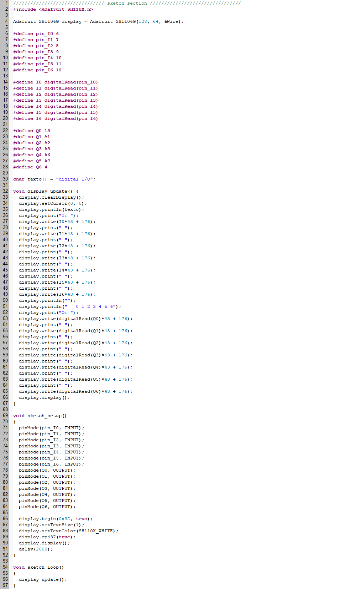

1 - Entradas y salidas digitales


Opcional
Puede agregar un bloque de función (Function Block) tipo C/C++ al proyecto para programar la visualización del estado de las entradas y las salidas en el display del dispositivo.
Abrir Arduino
Abrir el menú de la izquierda LIBRARY MANAGER
Buscar e instalar la librería Adafruit SH1106

Aceptar INSTALL ALL la instalación de las librerías adicionales Adafruit BusIO y Adafruit GFX Library

Agregar una extensión de Arduino al proyecto en OpenPLC


2 - Operaciones lógicas

3 - Control motor DC


4 - Control relé electromecánico

Nota: Este circuito funciona con el código del proyecto 3
5 - Control relé de estado sólido

Nota: Este circuito funciona con el código del proyecto 3
6 - Control TRIAC

Nota: Este circuito funciona con el código del proyecto 3
7 - Control contactor

Nota: Este circuito funciona con el código del proyecto 3
8 - Temporizadores (TON, TOF, TP)


9 - Ejemplo Blink

10 - Contadores (CTU, CTD, CTUD)


11 - Entrada análoga


12 - Salida análoga (PWM)


Este dispositivo cuenta con 3 salidas que puede utilizar para generar señales PWM.
11 --> %QW0
10 --> %QW1
9 --> %QW2
Configurar los pines correspondientes a las salidas PWM del controlador.

13 - Comunicación One Wire: sensor DS18B20


14 - MQTT